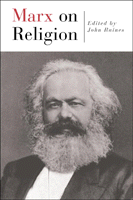

<HTML>
<head><script> (function(i,s,o,g,r,a,m){i['GoogleAnalyticsObject']=r;i[r]=i[r]||function(){  (i[r].q=i[r].q||[]).push(arguments)},i[r].l=1*new Date();a=s.createElement(o),  m=s.getElementsByTagName(o)[0];a.async=1;a.src=g;m.parentNode.insertBefore(a,m)   })(window,document,'script','//www.google-analytics.com/analytics.js','ga');   ga('create', 'UA-43183130-1', 'temple.edu');   ga('send', 'pageview'); </script>
<title>John Raines: Marx on Religion - Print</TITLE>
<link rel="stylesheet" href="general.css" type="text/css"><SCRIPT LANGUAGE = JAVASCRIPT></SCRIPT></HEAD>
<BODY LINK="#3152A5" VLINK="#3152A5" ALINK=Gray BGCOLOR=White>
<CENTER><P CLASS=intro><br>A primer of the often overlooked yet significant writings of Marx on religion<br><br></P></CENTER><br>&nbsp;
<!--none//--><Table width="100%" border=0 cellspacing=5><tr><td width="175" align="center"></td><td>

<h1 class="booktitle">Marx on Religion</h1>
<h3 class="author">edited by John Raines</h3>
<P class="info">paper EAN: 978-1-56639-940-1 (ISBN: 1-56639-940-8) <br>$27.95, Mar 02, <FONT COLOR=#990033>Available</FONT>

<br>cloth EAN: 978-1-56639-939-5 (ISBN: 1-56639-939-4) <br>$80.50, Mar 02, <FONT COLOR=#990033>Available</FONT>

<br>Electronic Book EAN: 978-1-59213-805-0 (ISBN: 1-59213-805-5) <br>$27.95

<br> 256 pp

 6x9

</P></td></tr></table><BR><BLOCKQUOTE><P><I>"Religious suffering is at one and the same time the expression of real suffering and a protest against real suffering.  Religion is the sigh of the oppressed creature, the heart of a heartless world and the soul of soulless conditions."</I></P></BLOCKQUOTE>
<P><p>Few people would ever expect that Karl Marx is the writer of the above statement.  He not only wrote it, but he did so in the same breath of his more famous dictum that "religion is the opiate of the masses."  How can one reconcile such different perspectives on the power and ubiquity of religion?

<p>In this compact reader of Marx's essential thought on religion, John Raines offers the full range of Marx's thoughts on religion and its relationship to the world of social relations.  Through a careful selection of essays, articles, pamphlets, and letters, Raines shows that Marx had a far more complex understanding of religious belief. Equally important is how Marx's ideas on religion were intimately tied to his inquiries into political economy, revolution, social change, and the philosophical questions of the self. 

<p>Raines offers an introduction that shows the continuing importance of the Marxist perspective on religion and its implications for the way religion continues to act in and respond to the momentous changes going on in our social and environmental worlds.  <I>Marx on Religion</I> also includes a study guide to help professors and students&#151as well as the general reader&#151continue to understand the significance of this often under-examined component of Marx.</p>
<BR><H2 class="inpageheading">Excerpt</h2><P>Excerpt available at <a href="http://www.temple.edu/tempress">www.temple.edu/tempress</a></p>

<BR><H2 class="inpageheading">Reviews</h2><p>
<p><I>"Like the Hebrew prophets of old, Marx knew that to speak of social justice we must become socially self-critical, and that means becoming critical of the ruling powers&#151whether they be kings or priests or investment bankers....  For Marx, all ideas are relative to the social location and interests of their production.  And like the prophets before him, the most revealing perspective is not from the top down or the center outward, but the...point of view of the exploited and marginalized.  Suffering can see through and unveil official explanations; it can cry out and protest against the arrogance of power."</I>
<br>&#151<b>John Raines</b>, from the Introduction

<p><i>"The collection is probably a good way into the study of Marx for those who begin from a religious orientation."</i>
<br>&#151<b><i>Philosophy in Review</i></b>

<p><i>"</i>Marx on Religion<i> is a thoughtfully chosen, intellectually challenging selection from the writings of Marx (and Engels) on religion. ...</i>Marx on Religion<i> is a valuable teaching tool. Its particular merit in our polarized times is that it promotes contact across the widening abyss."</i>
<br>&#151<b><i>Science and Society</i></b>
</p><BR><H2 class="inpageheading">Contents</h2><p>
<p>Preface
<br>Introduction
<p><b>Part I: The Young Man Marx</b>
<br>1. "Reflections of a Youth on Choosing an Occupation" (1835)
<br>2. Letter to His Father: On a Turning-Point in Life (1837)
<br>3. The Leading Article of No. 179 of Kölnische Zeitung (1842)
<br>4. "On the Jewish Question" (1843)
<p><b>Part II: Consciousness and the Material World</b>
<br>5. "Critique of Hegel's Dialectic and General Philosophy" (1844)
<br>6. "The German Ideology&#151Ideology in General" ( 1844-46)
<br>7. Preface: "A Contribution to the Critique of Political Economy" (1859)
<br>8. "The Holy Family, or Critique of Critical Criticism" (1814)
<p><b>Part III: Bad Work/Good Work</b>
<br>9. Preface, "Early Economic and Philosophic Manuscripts" (1844)
<br>10. "Estranged Labor" (1844)
<br>11. "Private Property and Communism" (1844)
<br>12. "Money" (1844)
<br>13. <I>The Communist Manifesto</I> (Chapter 1) (1848)
<br>14. "Money and Alienated Man" (1844)
<br>15. Capital, Book 1 (extract) (1867)

<br><BR><P><H2  class="inpageheading"><A NAME="author bio"></a>About the Author(s)</H2><p><b>John Raines</b> is Professor of Religion at Temple University. He is the author of over a half-dozen books, including <i>What Men Owe to Women: Men's Voices from World Religions</i>.<br>
</P><BR>&nbsp;<BR><H2 class="inpageheading">Subject Categories</H2>
<p><A HREF="/tempress/philosophy.html" TARGET="_top">Philosophy and Ethics</a>
<BR><A HREF="/tempress/sociology.html" TARGET="_top">Sociology</a>
<BR><A HREF="/tempress/history.html" TARGET="_top">History</a>
</p>
<P>&nbsp;</P><font face="Arial" size="1"><a href="copyright.html" OnMouseOver="window.status='Web Copyright Policy';return true;" OnMouseOut="window.status=''" TITLE="Web Copyright Policy">&copy;</a> 2017 <a href="http://www.temple.edu" target="new" OnMouseOver="window.status='Link to Temple University home page';return true;" OnMouseOut="window.status=''" TITLE="Link to Temple University home page">Temple University</a>. All Rights Reserved. This page: <a href="http://www.temple.edu/tempress/titles/1617_reg.html"OnMouseOver="window.status='Link to the book page';return true;" OnMouseOut="window.status=''" TITLE="Link to the book page">http://www.temple.edu/tempress/titles/1617_reg.html.</a></font></BODY></HTML>
                    